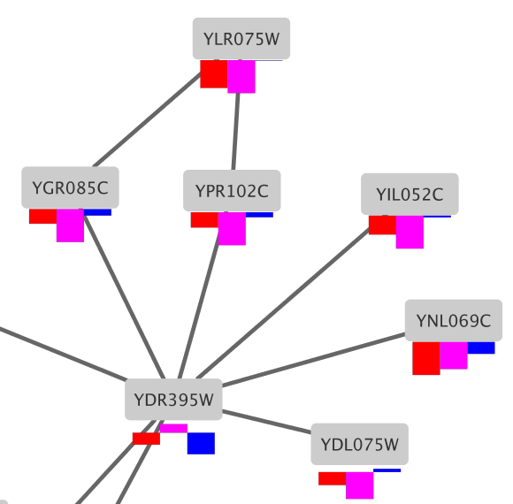
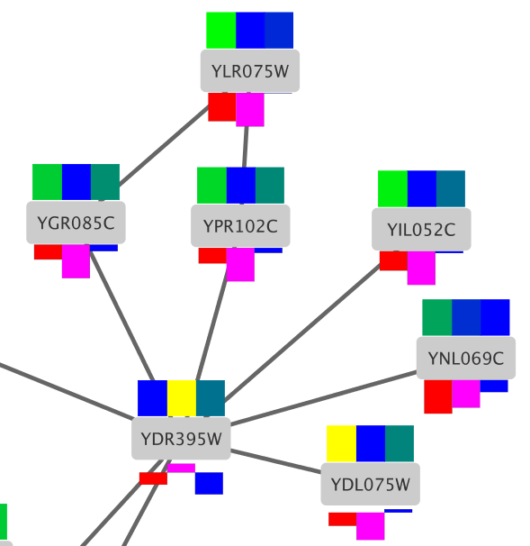
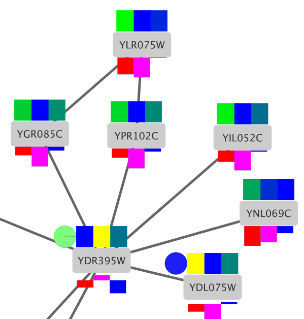
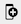
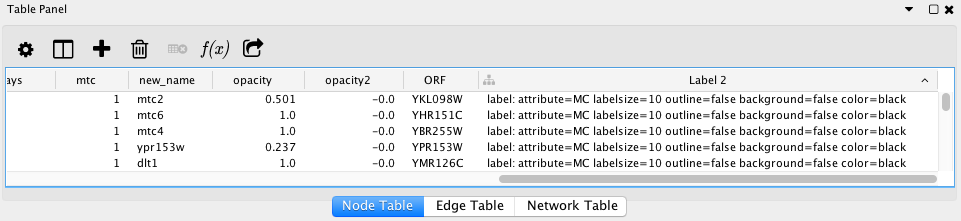
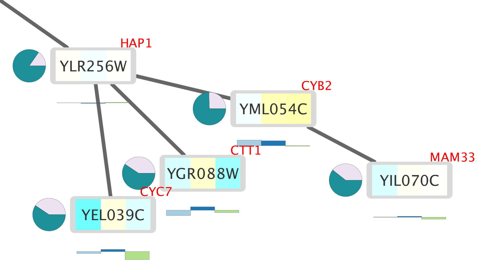
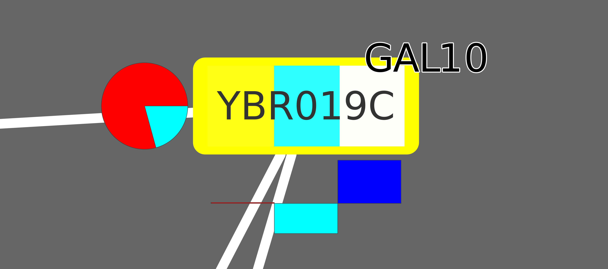

Custom Graphics and Labels
This tutorial illustrates how Cytoscape's Custom Graphics can be used to add graphs, charts and other graphics to node, and how to combine Custom Graphics with the enhancedGraphics app for specialized visualizations.
To get started, install the enhancedGraphics app via

Loading Network
For this tutorial, we will be using the Yeast Perturbation sample session in the Cytoscape Starter Panel.
- Launch Cytoscape and open the
Yeast Perturbation session file from theCytoscape Starter Panel . - In the
Style interface, switch to the default style in the drop-down at the top. - Switch the default node
Fill Color to a light grey. - Zoom in to see a few nodes clearly. The nodes are labeled with yeast ORF identifiers.

Custom Graphics Bar Chart
In this example, we will create a bar chart with the three expression values, gal1RGexp, gal4RGexp and gal80Rexp, available as attributes in the session file.
- In the
Style interface, click on default (Def. ) for theImage/Chart 1 property. - In the
Graphics interface, select theCharts tab. - We are going to use the default selected graph type, Grouped Bar Chart.
- In the
Available Columns list, select the three columns with expression data: gal1RGexp, gal4RGexp and gal80Rexp. You may need to remove columns selected by default from theSelected Columns list, this should only list our three columns of interest. - Expand the
Customize section and click theColor Palette button. UnderColorBrewer Qualitative , select the Paired colors palette (light blue/blue/green). - Click
Apply .
- The chart is now centered on the node. To move it, select
Paint → Custom Paint → Image/Chart Position 1 from theProperties drop-down menu. - Click on the
Def. column of this new entry to bring up a position editor. - Drag the darker blue
Object to right below the node. ClickOK to continue. You may have to adjust this positioning a few times to achieve an optimal visualization.
The nodes in your network should now look like this:
Custom Graphics Heatmap
Next we are going to create a horizontal heatmap of the same three data columns.
- Add another Custom Graphic by selecting
Paint → Custom Paint → Image/Chart 2 from theProperties drop-down menu. - Click on the
Def. column ofImage/Chart 2 . - Under
Charts selectHeatmap option (third icon from the left). Again, select the three columns containing expression data; gal1RGexp, gal4RGexp and gal80Rexp, and remove any other columns selected by default. - Under
Customize , selectHorizontal Orientation . - Select the Cyan-White-Yellow color scheme.
- Click
Apply .
For the heatmap, we can keep the default placement. The nodes in your network should now look like this:
Custom Graphics Pie Chart
Finally, we will create a pie chart with two columns, Radiality and Degree.
- Add a third Custom Graphic under
Paint → Custom Paint → Image/Chart 3 . - Define a
Pie Chart with the Radiality and Degree columns. - Keep the rest of the settings default and click
Apply . - Add the
Image/Chart Position 3 property and position the chart to the left of the node.

Additional Custom Graphics
There are several other graphics available through the default Custom Graphics in Cytoscape:
- Bar chart subtypes: Grouped, Stacked, Heat Strips and Up-Down
- Box charts
- Line charts
- Ring charts
For more detailed information on how to use Custom Graphics, see the Cytoscape Manual.
Enhanced Graphics Node Label
The nodes in the network are labeled with the corresponding protein names (yeast), but there is additional information in the Data Node Table that could be useful to display on the nodes. We are going to use a combination of Custom Graphics and the enhancedGraphics app to create a second node label for the yeast gene common name, which is available as the node attribute COMMON.
This involves three steps:
- Creating a new column with information interpreted by the
EnhancedGraphics App . - Mapping this new column to a
Custom Graphic . - Positioning the new label.
Create a new column
- In the
Data Node Table , click the plus sign  to add a new column. In the drop-down menu, selectNew Single Column → String . - In the
Create New String Column dialog, enter a name for your new column, in this case Label 2. - This creates a new empty column in the
Data Node Table .
Fill new column
The new column will define a new attribute that we will use for mapping to the
For our purposes, we will define a new mapping for a label based on the column COMMON:
label: attribute=COMMON labelsize=10 outline=false background=false color=red
- In the first cell of the Label 2 column, enter the new mapping and click enter. Your new entry may disappear to the bottom of the column; just click on the column header once or twice to re-sort.
- Right-click on the new entry and select
Apply to entire column . This will fill the column with the same mapping.

Mapping new label to Custom Graphic
We now have a new attribute that we can use for the mapping.
- In the
Style interface, add theImage/Chart 4 property. Click on theMap. entry for it to begin creating a mapping. - In the
Column field, select the new Label 2 column. - In the
Mapping Type , select Passthrough Mapping.
You should now see two labels per node that are partially overlapping.
Positioning the Custom Graphic
- Add the
Image/Chart Position 4 property and position the chart in the top right. You may have to adjust this positioning a few times to achieve an optimal visualization. - Lets also move the main node label. In the
Properties drop-down, selectLabel Position and use the position editor to move the label to the bottom half of the node.

Other Enhanced Graphics Label Features
- The enhancedGraphics app labels can also be used to draw outlined fonts that stand out against lighter or darker nodes
- Consider the following:
label: attribute="COMMON" labelsize=12 labelAlignment=left outline=true outlineColor=white outlineWidth=1 color=black - This will create a label with a white outline that will stand out in a darker background:
